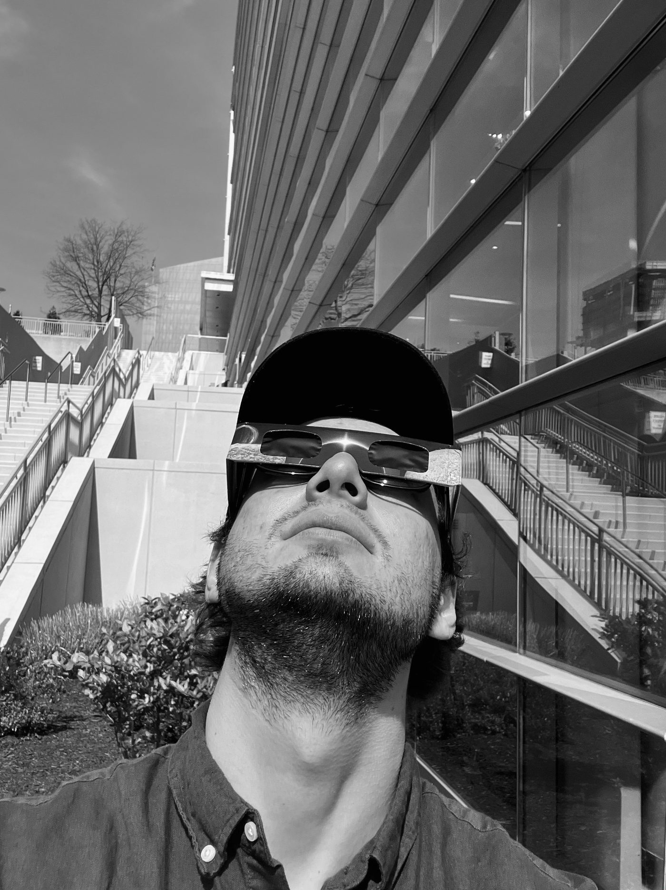

Vlad
Sedykh
A multimedia producer and editor. I've worked in post-production on Saturday Night Live, produced the daily episode of The Journal podcast from The Wall Street Journal and Spotify, and produced branded video at Homes.com.

A reel of
recent work
A short cut pulled from broadcast, branded, real estate, and social projects. Cut in Premiere Pro and DaVinci Resolve.
The story
behind the cut
I'm Vlad, a multimedia producer and editor. I've worked in post-production on Saturday Night Live, first as a Post-Production Assistant and later as a Production Coordinator. Before that I produced the daily episode of The Journal podcast from The Wall Street Journal and Spotify, and more recently I've produced branded and editorial video at Homes.com.
Most of my work lives in Premiere Pro and DaVinci Resolve. I'm used to running ten to fifteen projects at once and delivering on daily and weekly deadlines, whether that's a live broadcast, a daily news podcast, or a batch of branded cuts. I start with the story, use transcript-led assembly to get to a first cut fast, then finish by hand: pacing, sound, graphics, and a version for every channel the piece needs to live on.
Where I've
worked
NBCUniversal — Saturday Night LivePost-Production Assistant
- Supported post-production workflow for a weekly live television broadcast
- Cut and prepped video assets under tight weekly deadlines across 3 seasons
- Coordinated with writers, producers, and edit teams to ensure on-time delivery
Spotify / Wall Street Journal — The JournalPodcast Production Intern
- Worked on the daily production of The Journal, one of the most-listened-to news podcasts
- Handled audio edits, clip assembly, and delivery for daily episodes
- Kept episodes consistent and on schedule under a daily publishing deadline
NBCUniversal — Saturday Night LiveProduction Coordinator
- Coordinated production logistics and cross-department communication for SNL's 49th season
- Managed scheduling, asset tracking, and vendor coordination across weekly live shows
- Served as primary operational liaison between production, post, talent, and network
CoStar Group — Homes.comVideo Editor & Producer
- Delivered around 15 finished videos a month across promotional and educational work
- Ran 10 to 15 projects at once through every stage of post-production
- Handled the full edit, from ingest to final delivery
- Edited and produced branded video for social, web, and marketing
- Recut longer footage into shorter versions for different channels
Freelance Videographer, Editor & Director
- Directing, shooting, and editing video content for clients across commercial, real estate, and social media verticals
- End-to-end production from pre-production planning through final delivery
- Managing client relationships, creative briefs, and project timelines independently
Tools &
workflow
Editing & Finishing
Adobe Premiere Pro · DaVinci Resolve · CapCut
Primary NLEs across broadcast, branded, and social workMotion & Design
After Effects · Photoshop · Figma
Titles, graphics, and layout for video and webAudio
Pro Tools
Used in daily podcast production at Spotify / WSJSelected
projects
Get in
touch
Open to freelance, contract, and full-time work in video production and editing.